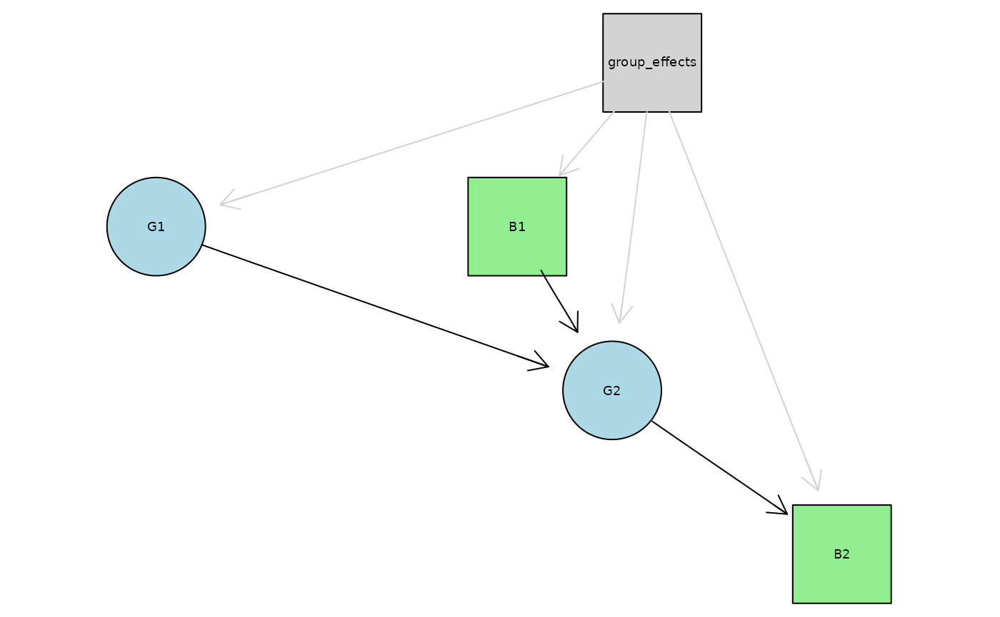

Mixed-effect Bayesian Network Model
Source:vignettes/mixed_effect_BN_model.Rmd
mixed_effect_BN_model.Rmd
library(abn)
#> abn version 3.0.6 (2024-03-17) is loaded.
#> To cite the package 'abn' in publications call: citation('abn').
#>
#> Attaching package: 'abn'
#> The following object is masked from 'package:base':
#>
#> factorial
library(lme4)
#> Loading required package: Matrix
library(Rgraphviz)
#> Loading required package: graph
#> Loading required package: BiocGenerics
#>
#> Attaching package: 'BiocGenerics'
#> The following objects are masked from 'package:stats':
#>
#> IQR, mad, sd, var, xtabs
#> The following objects are masked from 'package:base':
#>
#> anyDuplicated, aperm, append, as.data.frame, basename, cbind,
#> colnames, dirname, do.call, duplicated, eval, evalq, Filter, Find,
#> get, grep, grepl, intersect, is.unsorted, lapply, Map, mapply,
#> match, mget, order, paste, pmax, pmax.int, pmin, pmin.int,
#> Position, rank, rbind, Reduce, rownames, sapply, setdiff, sort,
#> table, tapply, union, unique, unsplit, which.max, which.min
#> Loading required package: grid
# Set seed for reproducibility
set.seed(123)This vignette demonstrates how to fit a mixed-effect Bayesian network
model using the abn package.
Introduction
Multi-level models, also known as hierarchical models are particularly useful when dealing with data that is structured at different levels - for instance, students nested within schools, or repeated measures nested within individuals. Multi-level models allow for the estimation of both within-group and between-group effects, and can help to account for the non-independence of observations within groups.
There are various types of multi-level models, including random-intercept models, random-slope models, and models that include both random intercepts and slopes. The estimation of multi-level models can be complex, as it involves estimating parameters at multiple levels of organization and accounting for correlations within each level. For instance, mixed-effect models with varying intercepts and slopes allow the effects of predictor variables to vary across groups. This involves the estimation of numerous parameters, including the variances and covariances of the random slopes and intercepts.
Among the different multi-level models, random-intercept models are often the simplest to understand and implement. They allow for variation between groups (e.g., schools or individuals), but assume that the effect of predictor variables is constant across these groups. This assumption is useful when there is outcome variability attributable to group-level characteristics, but the effects of predictor variables are assumed to be consistent across groups. Consequently, random-intercept models are less complex than those that also include random slopes.
Bayesian network models can be formulated based on these multi-level models. This approach was formalised by Azzimonti (2021) for discrete data and Scutari (2022) for continuous data. These authors demonstrated how to apply these models, including models with random coefficients, in various studies.
This vignette focuses on mixed data, which includes both discrete and
continuous variables. Unlike in other R packages for mixed-effect
Bayesian network modelling, additive Bayesian networks in the R package
abn do not restrict the possible parent-child combinations.
However, abn is limited to random-intercept models without
random coefficients. The inclusion of random coefficients would render
the model estimation process computationally practically unfeasible in
this less restricted data distribution setting.
In the following sections, we will demonstrate how to use this package to fit a random-intercept model to mixed data.
Ground truth data
We will generate first a data set with continuous (Gaussian) and discrete (Binomial) variables with a random-intercept structure.
n_groups <- 5
# Number of observations per group
n_obs_per_group <- 1000
# Total number of observations
n_obs <- n_groups * n_obs_per_group
# Simulate group effects
group <- factor(rep(1:n_groups, each = n_obs_per_group))
group_effects <- rnorm(n_groups)
# Simulate variables
G1 <- rnorm(n_obs) + group_effects[group]
B1 <- rbinom(n_obs, 1, plogis(group_effects[group]))
G2 <- 1.5 * B1 + 0.7 * G1 + rnorm(n_obs) + group_effects[group]
B2 <- rbinom(n_obs, 1, plogis(2 * G2 + group_effects[group]))
# Normalize the continuous variables
G1 <- (G1 - mean(G1)) / sd(G1)
G2 <- (G2 - mean(G2)) / sd(G2)
# Create data frame
data <- data.frame(group = group, G1 = G1, G2 = G2, B1 = factor(B1), B2 = factor(B2))
# Look at data
str(data)
#> 'data.frame': 5000 obs. of 5 variables:
#> $ group: Factor w/ 5 levels "1","2","3","4",..: 1 1 1 1 1 1 1 1 1 1 ...
#> $ G1 : num 0.786 -0.239 -1.651 -1.178 -0.981 ...
#> $ G2 : num -1.071 -0.454 -0.933 -0.788 -1.908 ...
#> $ B1 : Factor w/ 2 levels "0","1": 1 2 2 1 1 1 1 1 1 2 ...
#> $ B2 : Factor w/ 2 levels "0","1": 1 1 1 2 1 1 1 2 1 1 ...
summary(data)
#> group G1 G2 B1 B2
#> 1:1000 Min. :-2.91459 Min. :-3.1031 0:2262 0:1665
#> 2:1000 1st Qu.:-0.69009 1st Qu.:-0.7309 1:2738 1:3335
#> 3:1000 Median :-0.03136 Median :-0.1026
#> 4:1000 Mean : 0.00000 Mean : 0.0000
#> 5:1000 3rd Qu.: 0.65699 3rd Qu.: 0.6456
#> Max. : 3.91505 Max. : 3.2302
Additive Bayesian Network Model fitting
We will fit a mixed-effect Bayesian network model to the data using
the abn package to estimate the relationships between the
variables G1, G2, B1, and B2 qualitatively. The model will include a
random intercept for the group variable which is specified using the
group argument in the buildScoreCache()
function.
# Build the score cache
score_cache <- buildScoreCache(data.df = data,
data.dists = list(G1 = "gaussian",
G2 = "gaussian",
B1 = "binomial",
B2 = "binomial"),
group.var = "group",
max.parents = 2,
method = "mle")
# Structure learning
mp_dag <- mostProbable(score.cache = score_cache)
#> Step1. completed max alpha_i(S) for all i and S
#> Total sets g(S) to be evaluated over: 16
# Plot the DAG
plot(mp_dag)
We see that the most probable DAG equals the true DAG. Note that the
abn package does not plot the grouping variable in the DAG,
but it is included in the model.
# Parameter estimation
abn_fit <- fitAbn(object = mp_dag,
method = "mle")
# Print the fitted model
print(abn_fit)
#> The ABN model was fitted using a Maximum Likelihood Estimation (MLE) approach.
#>
#> The model is a Generalized Linear Mixed Model (GLMM) with the following grouping variable:
#>
#> group
#>
#> Fixed-effect parameters (mu):
#> $G1
#> [1] 1.14e-14
#>
#> $G2
#> [1] -0.404
#>
#> $B1
#> [1] 0.23
#>
#> $B2
#> [1] 2.27
#>
#> Fixed-effect coefficients (betas):
#> $G1
#> named numeric(0)
#>
#> $G2
#> G1 B1
#> 0.409 0.738
#>
#> $B1
#> named numeric(0)
#>
#> $B2
#> G2
#> 3.93
#>
#> Random-effects residuals (sigma):
#> $G1
#> [1] 0.814
#>
#> $G2
#> [1] 0.503
#>
#> $B1
#> numeric(0)
#>
#> $B2
#> numeric(0)
#>
#> Random-effects intercepts (sigma_alpha):
#> $G1
#> [1] 0.65
#>
#> $G2
#> [1] 0.415
#>
#> $B1
#> [1] 0.678
#>
#> $B2
#> [1] 0.41
#>
#> Number of nodes in the network: 0Comparison with the results of the lme4 package
# Fit a lmer model for G2
model_g2 <- lmer(G2 ~ G1 + B1 + (1 | group), data = data)
# Print summary
summary(model_g2)
#> Linear mixed model fit by REML ['lmerMod']
#> Formula: G2 ~ G1 + B1 + (1 | group)
#> Data: data
#>
#> REML criterion at convergence: 7359.7
#>
#> Scaled residuals:
#> Min 1Q Median 3Q Max
#> -3.8339 -0.6708 -0.0148 0.6946 3.7729
#>
#> Random effects:
#> Groups Name Variance Std.Dev.
#> group (Intercept) 0.1722 0.4150
#> Residual 0.2528 0.5028
#> Number of obs: 5000, groups: group, 5
#>
#> Fixed effects:
#> Estimate Std. Error t value
#> (Intercept) -0.40421 0.18592 -2.174
#> G1 0.40853 0.00874 46.741
#> B11 0.73815 0.01499 49.254
#>
#> Correlation of Fixed Effects:
#> (Intr) G1
#> G1 0.000
#> B11 -0.044 0.008
# Fit a glmer model for B2
model_b2 <- glmer(B2 ~ G1 + G2 + B1 + (1 | group), data = data, family = binomial)
# Print summary
summary(model_b2)
#> Generalized linear mixed model fit by maximum likelihood (Laplace
#> Approximation) [glmerMod]
#> Family: binomial ( logit )
#> Formula: B2 ~ G1 + G2 + B1 + (1 | group)
#> Data: data
#>
#> AIC BIC logLik deviance df.resid
#> 2767.1 2799.7 -1378.6 2757.1 4995
#>
#> Scaled residuals:
#> Min 1Q Median 3Q Max
#> -12.2485 -0.2197 0.0368 0.2661 6.6791
#>
#> Random effects:
#> Groups Name Variance Std.Dev.
#> group (Intercept) 0.1755 0.4189
#> Number of obs: 5000, groups: group, 5
#>
#> Fixed effects:
#> Estimate Std. Error z value Pr(>|z|)
#> (Intercept) 2.29458 0.22596 10.155 <2e-16 ***
#> G1 -0.05993 0.07026 -0.853 0.394
#> G2 3.98141 0.14545 27.373 <2e-16 ***
#> B11 -0.04588 0.11148 -0.412 0.681
#> ---
#> Signif. codes: 0 '***' 0.001 '**' 0.01 '*' 0.05 '.' 0.1 ' ' 1
#>
#> Correlation of Fixed Effects:
#> (Intr) G1 G2
#> G1 -0.113
#> G2 0.310 -0.365
#> B11 -0.268 0.352 -0.424The quantitative results of the abn package are
consistent with the results of the lme4 package.